에너지관리기사 (2004-03-07 기출문제)
1과목: 연소공학
1. 다음 설명 중 옳지 못한 것은?
- 역청탄의 착화온도는 300 ~ 400℃이다.
- 중유의 인화점은 60 ~ 140℃이다.
- 가솔린의 비점은 30 ~ 200℃이다.
- 발생로 가스의 발열량은 5670kcal/Nm3 정도이다.
(정답률: 50%)

2. 연소효율(Ec)을 옳게 표시한 식은? (단, Hℓ = 진발열량, Li = 불완전연소에 따른 손실열, Lc = 탄찌꺼기속의 미연 탄소분에 의한 손실열)
- Hℓ - Lc - Li/Hℓ
- Hℓ/Hℓ + Lc + Li
- Hℓ + Lc + Li/Hℓ
- Hℓ/Hℓ - Lc - Li
(정답률: 65%)
3. 그림은 어떤 로의 열정산도이다. 발열량이 2,000㎉/Nm3인 연료를 이 가열로에서 연소시켰을 때 강재가 함유하는 열량(㎉/Nm3)은?
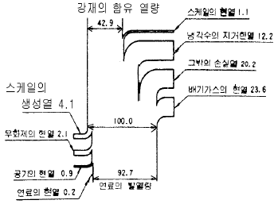
- 259.75
- 592.25
- 867.43
- 925.57
(정답률: 64%)
4. 석탄의 공업분석결과 수분 4.2%, 휘발분 16.2%, 회분 28.9%이었다. 이 연료의 발열량을 계산하면? (단, α = 650 이다.)
- 5343kcal/kg
- 4343kcal/kg
- 3343kcal/kg
- 2343kcal/kg
(정답률: 27%)
5. H2 = 50%, CO = 50%인 기체연료의 연소에 필요한 이론 공 기량(Nm3/Nm3)은?
- 0.50
- 1.00
- 2.38
- 3.30
(정답률: 71%)
6. 분젠 버너의 가스유속을 빠르게 했을 때 불꽃이 짧아지는 이유는?
- 층류 현상이 생기기 때문에
- 난류 현상으로 연소가 빨라지기 때문에
- 가스와 공기의 혼합이 잘 안되기 때문에
- 유속이 빨라서 미쳐 연소를 못하기 때문에
(정답률: 93%)
7. 연소관리에 있어서 과잉공기량 조절시 다음 중에서 최소가 되게 조절하여야 할 것은? (단, Ls : 배가스에 의한 열손실량, Li : 불완전연소에 의한 열손실량, Lc : 연사에 의한 열손실량, Lr : 열복사에 의한 열손실량일 때)
- Li
- Ls + Lr
- Ls + Li
- Li + Lc
(정답률: 80%)
8. 링겔만 매연농도표를 이용한 측정방법에 대한 설명으로 틀린 것은?
- 농도표는 측정자의 눈위치와 동일한 높이로 설치한다.
- 농도표는 측정자로부터 23m 정도 떨어진 곳에 설치한다.
- 측정자는 굴뚝으로부터 30~39m 정도 떨어진 위치에서 측정한다.
- 연기의 색도 측정위치는 연돌의 정상으로부터 30~45㎝ 정도 떨어진 부분으로 한다.
(정답률: 57%)
9. 일정한 체적의 저장용기에 담겨져 있는 기체 연료의 재고 관리상 확인해야 할 사항으로 다음중 적당한 것은?
- 부피와 온도
- 압력과 부피
- 온도와 압력
- 압력과 습도
(정답률: 65%)
10. 다음 중 중유연소의 장점이 아닌 것은?
- 발열량이 석탄보다 크고, 과잉공기가 적어도 완전 연소시킬 수 있다.
- 점화 및 소화가 용이하며, 화력의 가감이 자유로와서 부하 변동에 적용이 용이하다.
- 재가 적게 남으며, 발열량, 품질 등이 고체연료에 비해 일정하다.
- 회분을 전혀 함유하지 않으므로 이것에 의한 여러가지 장해가 없다.
(정답률: 93%)
11. CmHn 1Nm3를 완전 연소시켰을 때 생기는 H2O의 량(Nm3)은? (단, 분자식의 첨자 m, n과 답항의 n은 상수이다.)
- n/4
- n/2
- n
- 2n
(정답률: 95%)
12. 일반적인 정상연소에 있어서 연소 속도를 지배하는 요인은?
- 화학반응의 속도
- 공기(산소)의 확산속도
- 연료의 착화온도
- 배기가스중의 CO2 농도
(정답률: 77%)
13. 연소 배가스중에 가장 많이 포함된 기체는?
- O2
- N2
- CO2
- SO2
(정답률: 72%)
14. 미분탄연소의 장단점에 관한 다음 설명중 잘못된 것은?
- 부하 변동에 대한 적응성이 없으며 연소의 조절이 어렵다.
- 소량의 과잉공기로 단시간에 완전연소가 되므로 연소 효율이 좋다.
- 큰 연소실을 필요로 하며, 또 노벽냉각의 특별장치가 필요하다.
- 미분탄의 자연발화나 점화시의 노내 탄진 폭발 등의 위험이 있다.
(정답률: 53%)
15. 이론 공기량에 관한 옳은 설명은?
- 완전연소에 필요한 1차 공기량
- 완전연소에 필요한 2차 공기량
- 완전연소에 필요한 최대 공기량
- 완전연소에 필요한 최소 공기량
(정답률: 96%)
16. 탄소 87%, 수소 10%, 황 3%의 중유가 있다. 이 때 중유의 (CO2max)는 몇 %인가?
- 10.23%
- 16.58%
- 21.35%
- 25.83%
(정답률: 47%)
17. A회사에 입하된 석탄의 성질을 조사하였더니 회분 6%, 수분 3%, 수소 5% 및 고위발열량이 6000㎉/㎏이였다. 실제 사용할 때의 저발열량은 몇 ㎉/㎏인가?
- 3341
- 4341
- 5712
- 6341
(정답률: 알수없음)
18. 중유연소에 있어서 화염이 불안정하게 되는 원인이 아닌 것은?
- 물 및 기타 협잡물에 의한 분무의 단속(斷續)
- 유압의 변동
- 로내 온도가 너무 높을 때
- 연소용 공기의 과다(過多)
(정답률: 70%)
19. 액체연료의 연소방법중 틀린 것은?
- 유동층연소
- 등심연소
- 분무연소
- 증발연소
(정답률: 69%)
20. 대기오염물 제거방법중에서 분진의 제거방법으로 다음 중 적당하지 않은 것은?
- 습식세정법
- 원심분리법
- 촉매산화법
- 중력침전법
(정답률: 53%)
2과목: 열역학
21. 그림과 같은 랭킨 사이클의 이론 열효율 η는 어떻게 표시되는가? (단, 펌프일은 생략하며,ｉ는 엔탈피를 표시)
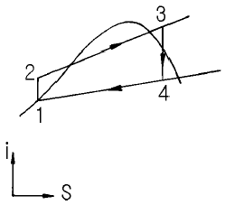
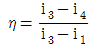
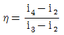
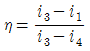
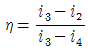
(정답률: 65%)
22. 건포화증기에 있어서 건도는 얼마인가?
- 0%
- 50%
- 100%
- 120%
(정답률: 69%)
23. 어느 과열증기의 온도가 325℃일 때 과열도를 구하면? (단, 이 증기의 포화 온도는 495K이다.)
- 93
- 103
- 113
- 123
(정답률: 64%)
24. 공기 50kg을 일정 압력하에서 100℃에서 700℃까지 가열할 때 엔탈피 변화는 얼마인가? (단, Cp = 0.241kcal/kg.℃, Cv = 0.127kcal/kg.℃이다.)
- 3810kcal
- 4810kcal
- 7230kcal
- 8230kcal
(정답률: 19%)
25. 96.9℃에 유지되고 있는 항온탱크가 온도 26.9℃의 방안에 놓여 있다. 어떤 시간동안에 1000㎈의 열이 항온탱크로부터 방안공기로 방출됐다. 항온탱크속 물질의 엔트로피의 변화는 얼마인가?
- 270㎈/K
- -2.70㎈/K
- -0.27㎈/K
- 2700㎈/K
(정답률: 64%)
26. 다음 중 수증기를 사용하는 화력발전소의 열역학 사이클로 가장 관계가 깊은 것은?
- 랭킨 사이클
- 오토 사이클
- 디젤 사이클
- 브레이턴 사이클
(정답률: 59%)
27. 압력 7[㎏/cm2], 온도 250℃의 과열증기가 내경 100㎜의 관속을 40[m/sec]로 흐를 경우에 레이놀즈수는? (단, 과열증기의 동점성계수는 0.7x10-5[m2/s]이다.)
- 4.2x104
- 2.6x105
- 5.7x105
- 6.3x106
(정답률: 44%)
28. 이상기체 １몰이 Ａ상태(TA, PA)에서 Ｂ상태(TB, PB)로 변화하였다. Cp가 일정할 경우 엔트로피의 변화는?
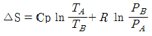
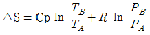
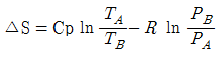
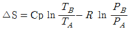
(정답률: 42%)
29. 성적계수 4.8인 증기압축냉동기의 1냉동톤 당 이론압축기 구동마력은? (단, 1냉동톤은 3320㎉/㎏으로 계산하시오.)
- 1.45[㎰]
- 1.04[㎰]
- 1.16[㎰]
- 1.09[㎰]
(정답률: 38%)
30. 하나의 열기관 사이클을 그림과 같은 T - S선도를 나타낼 때 이 열기관의 이론적 열효율은 몇 [%]인가?
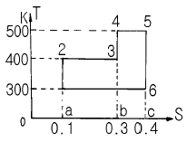
- 43.5
- 38.9
- 35.2
- 30.8
(정답률: 31%)
31. 동일한 최고 온도, 최저 온도 사이에 작동하는 사이클 중 최대의 효율을 나타내는 이상적인 사이클은?
- 오토 사이클
- 디젤 사이클
- 카르노 사이클
- 브레이턴 사이클
(정답률: 65%)
32. 동력 100㎰인 원동기가 2분간에 행하는 일의 열상당량은?
- 5760.8㎉
- 1650.8㎉
- 2808.6㎉
- 2107.7㎉
(정답률: 27%)
33. 기체 프로판(C3H8)을 강철 실린더에 저장하기 위하여 액화한다. 표준 상태에서 500ℓ 의 부피를 갖는 이 가스를 액화하면 대략 몇 g의 액체 프로판을 얻겠는가?
- 659
- 799
- 887
- 982
(정답률: 20%)
34. 다음 중 가스의 액화과정과 관계가 있는 것은?
- 등엔트로피 압축과정
- 등압냉각과정
- 줄-톰슨 팽창과정
- 등온팽창과정
(정답률: 30%)
35. 기체의 상태방정식이 아닌 것은?
- 오일러(Euler) 방정식
- 비리얼(Virial) 방정식
- 반데르발스(Van der Waals) 방정식
- 비티.브릿지만(Beattie-Bridgeman) 방정식
(정답률: 67%)
36. 그림에서 이상기체를 가역적으로 단열 압축시킨 후 정용하에서 냉각시키는 과정에 해당되는 것은?
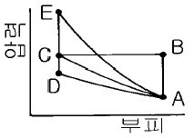
- A → B → C
- A → C
- A → D → C
- A → E → C
(정답률: 54%)
37. 드로틀 과정에서 다음 중 어느 상태치가 일정한 값을 유지하는가?
- 압력
- 비체적
- 엔탈피
- 엔트로피
(정답률: 83%)
38. 다음 중 공업로의 노벽 표면으로부터의 열의 자연 대류는 어느 것이 가장 큰가?
- 벽이 수평 하향일 때
- 벽이 수평 상향일 때
- 벽이 수직일 때
- 벽이 45° 경사 상향일 때
(정답률: 43%)
39. 다음 중 과열증기에 대한 설명으로 올바른 것은?
- 압력은 일정하고 온도만이 증가된 상태의 증기
- 온도는 일정하고 압력만이 증가된 상태의 증기
- 온도와 압력이 모두 증가된 상태의 증기
- 주어진 온도에서 증발이 일어났을 때의 증기
(정답률: 62%)
40. 압력 10kgf/cm2에서 공급되는 보일러로 부터의 수증기가 건도 0.95로 알려져 있다. 이 수증기 1㎏당의 엔탈피에 제일 가까운 값은? (단, 10kgf/cm2에서 포화수의 엔탈피는 181.2㎉/㎏, 포화증기의 엔탈피는 662.9㎉/㎏이다.)
- 457.6㎉/㎏
- 638.8㎉/㎏
- 810.9㎉/㎏
- 1120.5㎉/㎏
(정답률: 40%)
3과목: 계측방법
41. 공업용 압력계의 설명중 옳지 않은 것은?
- 침종식은 작동의 영향이 적고 감도가 비교적 크다.
- 침종식에 쓰이는 액체는 기름, 물 등이 사용된다.
- 원환(환상)식은 압력원에 가깝게 계기를 설치한다.
- 원환(환상)식에 쓰이는 액체는 알콜이 사용된다.
(정답률: 37%)
42. 제어 장치중 기본입력과 검출부 출력의 차를 조작부에 신호로 전하는 부분은?
- 조절부
- 검출부
- 비교부
- 제어부
(정답률: 67%)
43. 피토-관(pitot tube)에 대한 주의사항으로 틀린 것은?
- 5m/sec 이하의 기체에서는 적용할 수 없다.
- 더스트(dust), 미스트(mist) 등이 다량의 유체에 적합하다.
- 피토관의 헤드부분은 유동방향에 대해 평행으로 부착한다.
- 흐름에 대해 충분한 강도를 가져야 한다.
(정답률: 42%)
44. 자동연소 장치의 광전관 화염검출기가 정상적으로 작동하고 있는지를 간단히 점검할 수 있는 가장 좋은 방법은?
- 광전관 회로의 전류를 측정해 본다.
- 화염검출기(火炎檢出器) 앞을 가려 본다.
- 광전관 회로의 연결선을 제거해 본다.
- 파이로트 버너(Pilot Burner)에 점화하여 본다.
(정답률: 74%)
45. 가장 많이 쓰이는 압력계에서 일반적으로 나타나는 압력은 다음 공식중 어느 것에 해당되는가?
- 절대압 - 대기압
- 대기압 - 절대압
- 절대압 - 진공
- 대기압 - 진공
(정답률: 35%)
46. 색온도계(color pyrometer)에 대해 옳게 설명된 것은?
- 온도에 따라 색이 변하는 일원적인 관계로부터 온도를 측정한다.
- 바이메탈 온도계의 일종이다.
- 유체의 팽창정도를 이용하여 온도를 측정한다.
- 기전력의 변화를 이용하여 온도를 측정한다.
(정답률: 67%)
47. 폐(閉)루프를 형성하여 출력측의 신호를 입력측에 되돌리는 제어를 표현하는 것은?
- 조절부
- ON - OFF동작
- 피드백(Feed back)
- 리셋트(Reset)
(정답률: 83%)
48. 봉입식 압력 온도계의 장점이 아닌 것은?
- 계기 자체에 다른 보조 전원이 필요없다.
- 미세한 온도 변화의 검출에 적합하다.
- 구조가 복잡하고 설치가 어렵다.
- 감온부와 계기간의 격리거리가 멀어 원격측정에 적당하다.
(정답률: 36%)
49. 저항 온도계중 백금(Pt)저항체에 대하여 틀린 것은?
- 저항온도계수는 적으나 안정성이 좋다.
- 0℃에서 500Ω을 표준으로 한다.
- 측정온도는 최고 500℃까지 이다.
- 온도 측정시 시간 지연의 결점이 있다.
(정답률: 74%)
50. 압력측정에 사용되는 액체에 대한 설명중 틀린 것은?
- 점성이 클 것
- 열팽창계수가 작을 것
- 모세관현상이 작을 것
- 일정한 성분을 가질 것
(정답률: 65%)
51. 지름 1㎝의 피스톤을 갖는 사하중계(dead weight)의 추, 피스톤 그리고 pan의 전체 무게가 6.14㎏이라면 게이지(gauge) 압력은? (단, 가속도는 9.82m/s2이다.)
- 76.77N/cm2
- 76.77Pa
- 86.77N/cm2
- 86.77Pa
(정답률: 24%)
52. 전자유량계에서 파이프의 안지름이 4㎝, 3ℓ /s의 액체가 흐르고, 자속밀도 1000가우스의 평등자계내에 있다면 이 때 검출되는 전압은?(단, 자속분포의 수정 계수는 1)
- 약 9.5㎷
- 약 10.5㎷
- 약 11.5㎷
- 약 12.5㎷
(정답률: 0%)
53. 다음 중 유량계의 기본 원리 식은? (단, Q : 유량, V : 유체속도, A : 관단면적, ρ : 유체밀도)
- Q = Ｖ x Ａ
- Q = V x ρ
- Q =VA/ρ
- Q =V/A
(정답률: 72%)
54. 자동제어 장치의 보일러에서 착화 불량이 되었던 원인이 아닌 것은?
- 전극이 손상된 경우
- 수위가 너무 높은 경우
- 저연소 조절위치가 잘못된 경우
- 화염감지기의 성능에 이상이 발생한 경우
(정답률: 59%)
55. 측온 저항체의 설치 방법으로 틀린 것은?
- 삽입길이는 관직경의 10 ~ 15배 이어야 한다.
- 유속이 가장 빠른 곳에 설치하는 것이 좋다.
- 가능한한 파이프 중앙부의 온도를 측정할 수 있게 한다.
- 파이프길이가 아주 짧을 때에는 유체의 방향으로 굴곡부에 설치한다.
(정답률: 50%)
56. 목표량과 계측량과 편차[ε]의 크기 및 지속시간과 비례한 제어동작은?
- PID동작
- ON - OFF동작
- PI동작
- P동작
(정답률: 48%)
57. 다음 중 써멀 플로-메타(thermal flow meter)의 특징은?
- 질량(mass) 측정
- 체적(volume) 측정
- 면적(area) 측정
- 수두(head) 측정
(정답률: 47%)
58. 다음 중 보일러 공기예열기의 공기유량을 측정하는데 가장 적합한 유량계는?
- 면적식 유량계
- 열선식 유량계
- 차압식 유량계
- 용적식 유량계
(정답률: 47%)
59. 다음 중 오르자트식 가스분석계로 측정하기가 가장 곤란한 것은?
- O2
- CO2
- CH4
- CO
(정답률: 86%)
60. 바이메탈 온도계의 특징을 열거한 것으로 틀린 것은?
- 오래 사용시 히스테리시스 오차가 발생한다.
- 온도변화에 대하여 응답이 빠르다.
- 기구가 간단하다.
- 온도자동 조절이나 온도 보상장치에 이용된다.
(정답률: 40%)
4과목: 열설비재료 및 관계법규
61. 공업용 로에 있어서 폐열회수장치로 가장 적합한 것은?
- 댐퍼
- 레큐퍼레이터
- 바이패스 연도
- 에코노마이저
(정답률: 65%)
62. 다음 중 유체의 역류를 방지하여 한쪽 방향으로만 흐르게 하는 것으로 밸브의 무게와 밸브 양면에 작용하는 압력차에 의하여 자동적으로 작동하게 되는 밸브는?
- 회전밸브
- 슬루우스밸브
- 책크밸브
- 방열기밸브
(정답률: 79%)
63. 에너지사용량이 대통령령이 정하는 기준량이상이 되는 에너지사용자는 산업자원부령이 정하는 바에 따라 언제 산업자원부장관에게 신고하여야 하는가?
- 매년 1월31일까지
- 매년 3월31일까지
- 매년 6월30일까지
- 매년 12월31일까지
(정답률: 77%)
64. 로내 강의 산화를 다소 감소시킬 수 있는 연소가스는?
- O2
- CO
- CO2
- H2O
(정답률: 19%)
65. 샤모트질 벽돌에 대한 주성분으로 알맞는 것은?
- Al2O3,2SiO2,2H2O
- Al2O3,7SiO2,H2O
- FeO,Cr2O3
- MgCO3
(정답률: 73%)
66. 에너지이용합리화법의 목적이 아닌 것은?
- 에너지의 합리적인 이용 증진
- 국민경제의 건전한 발전에 이바지
- 에너지소비로 인한 환경피해를 줄임
- 에너지자원의 보전 및 관리와 에너지수급 안정
(정답률: 47%)
67. 로내에 NH3와 같은 질소를 포함한 기체 분위기에서 강의 표면을 질화시키기에 적합한 가열 온도 범위는?
- 450∼650℃
- 650∼850℃
- 850∼1⑤0℃
- 1⑤0∼1250℃
(정답률: 43%)
68. 내화물이란 얼마 이상의 온도에서 견디는 재료를 말하는가?
- 500℃
- 810℃
- 1250℃
- 1580℃
(정답률: 39%)
69. 에너지이용합리화법상 검사의 종류가 아닌 것은?
- 설계검사
- 제조검사
- 운전성능검사
- 개조검사
(정답률: 69%)
70. 내화벽돌을 사용할 때 다음 중 합리적이지 않은 것은?
- 피열물질의 화학적인 성질을 고려해야 한다.
- 모르타르의 성질이 적합해야 한다.
- 내화도는 높을수록 좋다.
- 내스폴링성이 클수록 좋다.
(정답률: 50%)
71. 석회 소성로의 종류에 속하지 않는 것은?
- 샤프트 킬른
- 유동 소성로
- 로터리 킬른
- 터널 킬른
(정답률: 32%)
72. 에너지 사용계획 협의대상 사업으로 맞는 것은? (단, 기준면적 적용)
- 택지개발사업 중 면적이 10만m2 이상
- 도시개발사업 중 면적이 30만m2 이상
- 국가산업단지개발사업 중 면적이 5만m2 이상
- 공항개발사업 중 면적이 20만m2 이상
(정답률: 58%)
73. 다음 중 고알루미나질 내화물은?
- 산성내화물
- 중성내화물
- 염기성내화물
- 특수내화물
(정답률: 69%)
74. 연속 가열로는 강제의 이동방식에 따라 분류되어 진다. 이에 속하지 않는 것은?
- 전기 저항식
- 회전 노상식
- 풋셔(Pusher)식
- 워킹.빔(Walking beam)식
(정답률: 61%)
75. 에너지이용합리화법에서 규정한 수요관리 전문기관은?
- 한국가스안전공사
- 에너지관리공단
- 한국전력공사
- 전기안전공사
(정답률: 79%)
76. 폴리스틸렌포옴의 최고 안전 사용온도는?
- 130℃
- 100℃
- 70℃
- 50℃
(정답률: 38%)
77. 다음 중 산성내화물인 것은?
- 고알루미나질
- 내화 점토질
- 마그네시아질
- 크롬-마그네시아질
(정답률: 56%)
78. 다음 보온재중 천연섬유 보온재는?
- 초자섬유
- 암면
- 석면
- 광재(slag)면
(정답률: 36%)
79. 검사대상기기의 적용범위로 가스를 사용하는 소형온수보일러인 경우 해당되는 가스 사용량의 기준은?
- 가스사용량이 시간당 17kg(도시가스는 20만 kcal)를 초과하는 것
- 가스사용량이 시간당 20kg(도시가스는 30만 kcal)를 초과하는 것
- 가스사용량이 시간당 25kg(도시가스는 20만 kcal)를 초과하는 것
- 가스사용량이 시간당 30kg(도시가스는 30만 kcal)를 초과하는 것
(정답률: 93%)
80. 에너지절약전문기업의 등록 취소사유 중 틀린 것은?
- 등록기준에 미달시
- 부정한 방법으로 등록시
- 산자부장관에게 적당히 보고할 때
- 소속공무원 출입검사시 방해할 때
(정답률: 59%)
5과목: 열설비설계
81. 표면응축기의 외측에 증기를 보내며 관속에 물이 흐른다. 사용하는 강관의 내경이 30㎜, 두께가 2㎜이고 증기의 전열계수는 8000㎉/m2h℃, 물의 전열계수는 2500㎉/m2h℃이다. 강관의 열전도도가 35㎉/m2h℃일 때 총괄 전열계수는 몇 ㎉/m2h℃가 되는가?
- 17.2
- 172
- 1720
- 17200
(정답률: 73%)
82. 압력용기용으로 탄소강 강관을 이용코자 한다. 탄소강 강관을 사용할 수 있는 제한된 최고 사용압력은?
- 5㎏/cm2
- 10㎏/cm2
- 15㎏/cm2
- 20㎏/cm2
(정답률: 40%)
83. 원통 보일러의 노통은 어떠한 열응력을 받는가?
- 압축 응력
- 인장 응력
- 굽힘 응력
- 전단 응력
(정답률: 알수없음)
84. 열교환기는 흐르는 유체의 불결로 인하여 불순물이 침적하거나 용해성분을 석출하여 관에 부착하여 전열저항이 커진다. Rd를 불결계수(fouling factor)라고 하고 불결열관류율을 kd, 청결열관류율을 kc라 할 때의 관계는?
- kd = kc + Rd
- kd = kc + 1/Rd
- 1/ kd = 1/kc+ Rd
- 1/kd = 1/ kc + 1/Rd
(정답률: 59%)
85. 다음 중 수관 보일러의 특징으로 틀린 것은?
- 노를 자유로운 모양으로 만들수 있으므로 연소상태가 좋고 제약이 적다.
- 구조상으로 볼 때, 고압 대용량에도 적합하다.
- 전열면적 대비 보유 수량이 적으므로 증기발생이 빠르며, 부하 변동에 의한 압력이나 수면 변동이 적다.
- 전열면이 크므로 일반적으로 열효율이 높다.
(정답률: 61%)
86. 노통보일러에서 일어나는 열팽창을 흡수하는 역할을 하는 것은?
- 엔드플레이트
- 프라이밍방지기
- 가셋스테이
- 애덤슨조인트
(정답률: 70%)
87. 보일러 수냉관과 연소실벽 내에 설치된 복사 과열기의 특징은?
- 보일러 부하증대가 최대일 때 과열 온도가 최대
- 보일러 부하증대가 최대일 때 과열 온도는 일정
- 보일러 부하증대에 따라 과열온도가 상승
- 보일러 부하증대에 따라 과열온도가 강하
(정답률: 45%)
88. 보일러수를 중성보다 높은 pH 10.5∼11.8로 하는 이유는?
- 첨가된 염산이 강재를 보호하기 때문이다.
- 보일러수 중에 적당량의 수산화 나트륨을 포함시켜 보일러의 부식 및 스케일 부착을 방지하기 위함이다.
- 과잉 알칼리성이 더 좋으나 약품이 많이 소요되므로 원가면에서 pH 10.5∼11.8로 권장하고 있다.
- 표면에 딱딱한 스케일이 생성되어 부식을 완전 방지하기 때문이다.
(정답률: 64%)
89. 연소 가스의 성분중 절탄기의 전열면을 부식시키는 성분은?
- 질소산화물(NO2)
- 탄소산화물(CO2)
- 황산화물(SO2)
- 질소(N2)
(정답률: 65%)
90. 다음 중 과열기를 사용하여 얻어지는 이점이 아닌 것은?
- 이론열효율의 증가
- 원동기중의 열낙차의 감소
- 증기소비량의 감소
- 회전익의 부식방지
(정답률: 38%)
91. 육용강제 보일러에 있어서 길이 스테이 또는 경사 스테이의 핀이음에 의해서 부착할 경우, 스테이의 꼬리 부분의 단면적을 스테이의 소요단면적 얼마 이상으로 하는가?
- 1배
- 1.25배
- 1.75배
- 2배
(정답률: 78%)
92. 랜커서 보일러에 대한 설명중 내용이 부적합한 것은?
- 같은 지름의 코르니쉬 보일러와 비교하면 전열면적이 크다.
- 노통이 1개이다.
- 노내 온도의 급강하가 적다.
- 수면의 높이는 노통 꼭대기 위에서 약 150㎜ 정도로 유지한다.
(정답률: 82%)
93. 전열면적 10m2를 초과하는 보일러에서의 급수밸브 및 체크 밸브의 크기는 관의 호칭지름이 얼마 이상이어야 하는가?
- 5mm 이상
- 10mm 이상
- 15mm 이상
- 20mm 이상
(정답률: 48%)
94. 저압 원통 보일러에서 관수의 pH 값으로 적당한 것은?
- 5.5 ~ 6.5
- 7.5 ~ 8.5
- 8.5 ~ 9.5
- 10.5 ~ 11.5
(정답률: 79%)
95. 다음 중 구조상 고압에 적당하여 배압력이 높아도 작용하며, 드레인 배출온도를 변화시킬 수 있고 증기누출이 없는 트랩은?
- 디스크(Disk)식 트랩
- 플로트(Float)식 트랩
- 상향 버킷(Bucket)트랩
- 바이메탈(Bimetal)식 트랩
(정답률: 50%)
96. 보일러효율 시험방법중 측정방법의 내용이 틀린 것은?
- 연료의 온도는 유량계 전에서 측정한 온도로 한다.
- 급수량은 체적식 유량계로 측정하며 유량계의 오차는 ±1.5% 범위내에 있어야 한다.
- 급수온도는 보일러 입구에서 측정한다.
- 증기압력은 보일러 출구에서의 압력으로 한다.
(정답률: 59%)
97. 두께 25㎜인 철판이 넓이 1m2다의 전열량이 매 시간 1000㎉가 되려면 양면의 온도차는 몇 ℃인가? (단, 철판의 열전도율 k는 50㎉/m2h℃이다.)
- 0.5
- 0.8
- 1.0
- 1.5
(정답률: 25%)
98. 노통의 안지름이 2536㎜, 길이가 5300㎜인 보일러의 전열 면적은 약 몇 m2가 되는가?
- 34.3
- 42.2
- 59.8
- 70.1
(정답률: 48%)
99. 열정산시 기준에 대한 설명 중 잘못된 것은?(오류 신고가 접수된 문제입니다. 반드시 정답과 해설을 확인하시기 바랍니다.)
- 시험부하는 원칙적으로 정격부하로 한다.
- 시험은 시험용 보일러를 다른 보일러와 무관한 상태에서 시행한다.
- 열정산의 기준온도는 표준온도 15℃로 한다.
- 발열량은 원칙적으로 사용시 연료의 저발열량으로 한다.
(정답률: 31%)
100. 보일러 효율을 나타낸 식중 틀린 것은? (단, Ge : 상당 증발량, Gf : 연료 소비량[㎏/h], Ga : 실제 증발량[㎏/h], h2, h1 : 발생증기 및 급수 의 엔탈피[㎉/㎏], Hℓ : 연료의 저발열량)
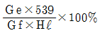
- 연소효율(ηc)x전열효율(ζh)
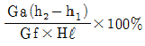
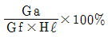
(정답률: 알수없음)